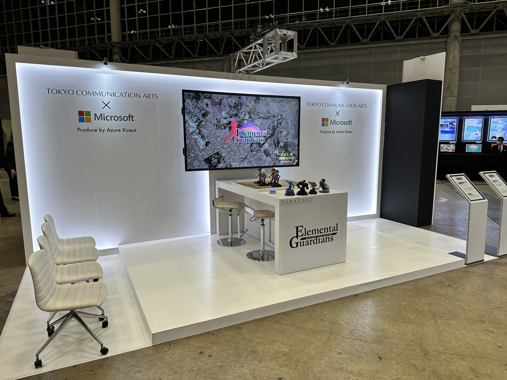
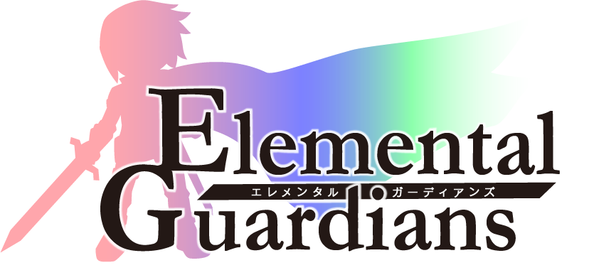
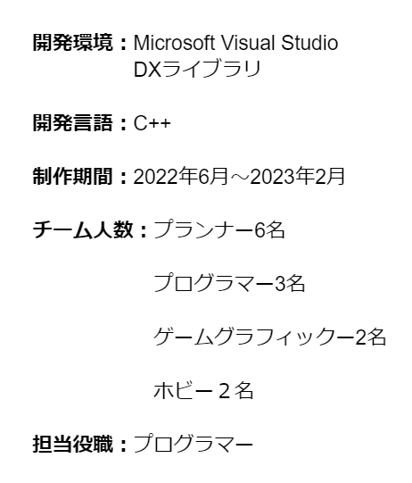

ElementalGuardians

このゲームは日本マイクロソフト株式会社より発売されているセンサデバイス「AzureKinectDK」を使用し、 実際の盤上の駒をゲーム画面をリンクされて操作を行う、新感覚のボートゲームです。
ゲーム概要

アナログとデジタルを組み合わせたボードゲームとなっており、センサーデバイスを用いて作られたゲームとなっています。センサーデバイスを用いることで、動かした駒に連動して、リアルタイムでモニターのキャラも動くようになっているなど、今までのゲームでは味わえないような新鮮な体験を提供します。

「AzureKinectDK」というセンサーデバイスを用いて作りました。初めて使う機器というのもあり、最初は自分たちが使いたい機能はどのようにして使用するのかという研究から始め、それを踏まえた上でゲームを遊ぶために必要な独自の機能を実装していきました。
苦労した点
ElementalGuardiansの制作では、「AzureKinectDK」というセンサーデバイスは初めて使う機材のため、必要な独自の機能深度センサーの実装に苦労しました。
担当箇所
このプロジェクトでは、深度センサーや4つのエレメントの機能、ルーレットの実装を担当しました。深度センサーにおいては、実際の
ソースコード
